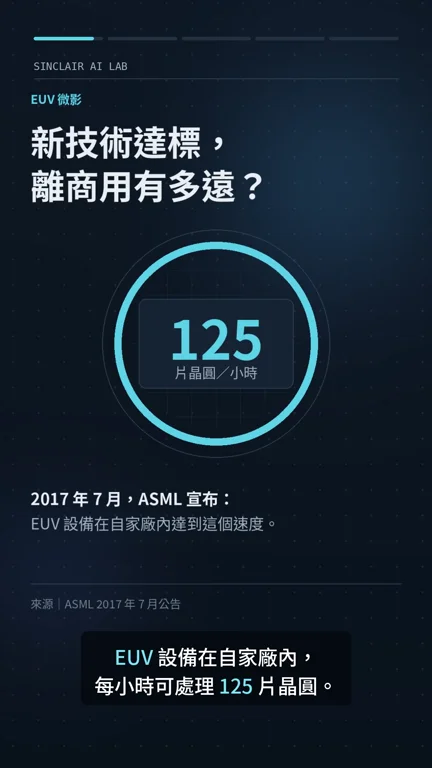

已完成試點 · 有作業數據
Figure 02｜焊接前的鈑金定位
2025 年在車身工場搬運與定位鈑金件。BMW 於 公布試點實績。
逾 90,000 件累計搬運零件
約 1,250 小時累計運作時間
- 接下來要查
- 合格率、人工介入頻率，以及每件合格品的成本。
先看公告證明了哪一步。設備測試、現場作業和可量測成果，各自回答不同問題。

播放 67 秒短片收合播放器 繁中字幕點開各筆公告，看看它能回答什麼。
Physical AI 把感知、判斷與動作帶進現場。BMW 在 Spartanburg 廠試做了兩種工作，各有不同的公開證據。
已完成試點 · 有作業數據
2025 年在車身工場搬運與定位鈑金件。BMW 於 公布試點實績。
現場示範 · 追蹤運作數據
在 Hall 52 從料箱取出零件，按裝配順序放到推車。BMW 於 說明新任務，Figure 於 公布現場示範。